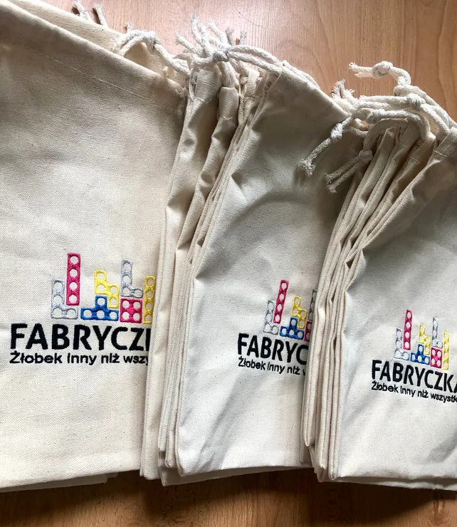

Logo Twojej firmy. Precyzja w każdym ściegu.
Haft komputerowy na odzieży firmowej i tekstyliach. Od pojedynczego projektu po znakowanie większej partii — porozmawiajmy o tym, czego potrzebuje Twoja marka.

Haft, który pasuje
do Twojego biznesu.
Pracujemy z różnymi rodzajami tekstyliów — od odzieży firmowej po drobne akcesoria. Każde zapytanie rozpatrujemy indywidualnie.

Odzież firmowa
Logotypy na ubraniach zespołu, odzieży zawodowej i tekstyliach używanych w firmie.
Poznaj możliwości
Czapki i akcesoria
Haftowane oznaczenia na dodatkach, które budują spójny wizerunek marki.
Poznaj możliwości
Tekstylia i personalizacja
Worki, ręczniki i inne tekstylia z haftem dla organizacji oraz klientów indywidualnych.
Poznaj możliwościNie wiesz, czy dany materiał nadaje się do haftu? Opisz nam swój pomysł — sprawdzimy możliwości.
Efekty, które
można zobaczyć.
Nie wizualizacje ani zdjęcia z katalogu — wybrane, rzeczywiście wykonane hafty w naszej pracowni.

Od pomysłu
do gotowego haftu.
Prosto, bez zbędnych formalności. Na początku potrzebujemy kilku informacji, aby ocenić zakres pracy i przygotować ofertę.
Opowiedz o zamówieniu
Prześlij logo lub opis wzoru. Podaj rodzaj produktu, orientacyjną ilość sztuk i wielkość haftu.
Ustalamy szczegóły
Sprawdzamy możliwości wykonania, dobieramy rozwiązanie i przedstawiamy indywidualną wycenę.
Realizujemy haft
Po uzgodnieniu warunków przygotowujemy haft oraz sposób przekazania gotowych produktów.
Potrzebujesz też odzieży do haftu?
Współpracujemy z hurtowniami odzieży i tekstyliów, dzięki czemu możemy pomóc w zapewnieniu odpowiednich produktów do znakowania. Nie musisz organizować wszystkiego osobno.
Zapytaj o odzież z haftemLiczy się każdy
szczegół projektu.
Haft to technika z własnym charakterem: fakturą nici, widoczną strukturą ściegów i ograniczeniami zależnymi od materiału. Pokazujemy nasze prawdziwe realizacje, żeby było wiadomo, jak wygląda gotowy efekt.
Poznaj naszą pracęDobrze wiedzieć
przed zamówieniem.
Czy mogę zamówić haft na własnej odzieży?
Opisz nam rodzaj odzieży i materiał. Sprawdzimy, czy nadaje się do znakowania i na jakich warunkach możemy przyjąć takie zamówienie.
Czy mogę zamówić odzież razem z haftem?
Tak, współpracujemy z hurtowniami odzieży i tekstyliów. Napisz, jakich produktów potrzebujesz, a ustalimy dostępne możliwości.
Co jest potrzebne do przygotowania wyceny?
Najlepiej przesłać wzór lub logo, liczbę sztuk, rodzaj materiału, planowane miejsce haftu oraz przybliżoną wielkość znakowania.
Czy haft zawsze będzie wyglądać identycznie jak grafika?
Nie zawsze. Haft składa się ze ściegów, dlatego bardzo drobne elementy, gradienty i delikatne linie mogą wymagać dostosowania. Przed realizacją ustalamy możliwe rozwiązania.